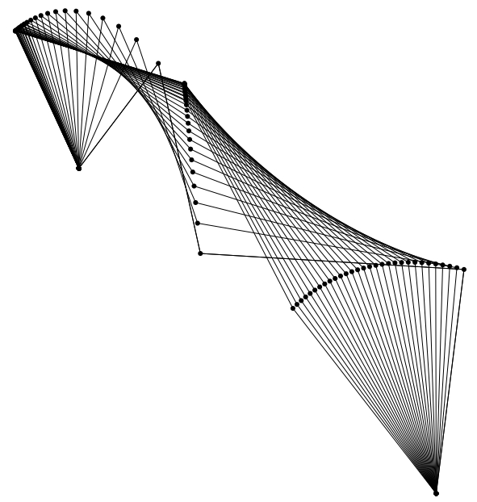

linkR
Linkages, or closed loops of inter-jointed, rigid links, are commonly used in engineering to transform an input motion or force into an output motion or force along a particular path. Several groups of animals have evolved musculoskeletal structures for feeding, breathing and defense that employ structures analogous to linkages in engineering. However, while human-made linkages are usually confined to a single two-dimensional plane, biological linkages are often three-dimensional.
The linkR package for R provides a toolkit for creating models of 2D and 3D linkages, predicting motion, force and torque outputs and calculating linkage mechanical properties such as motion, force and torque transmission ratios. linkR works with the R package svgViewR, enabling users to create 3D interactive animations of linkage models.
linkR Tutorial v1.1
 This tutorial will show you how to use linkR to simulate and analyze the motion of 2D and 3D linkage mechanisms, including linkages analogous to kinetic mechanisms in the skulls of birds and fishes.Tutorial: Modeling linkages using linkR v1.1.pdf (7 MB)
Release date: September 2016
linkR version: >= 1.1